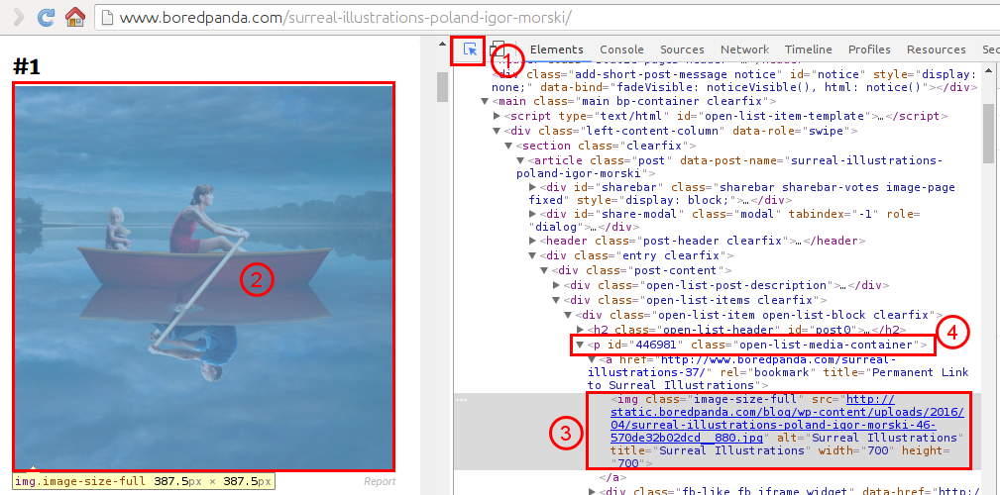
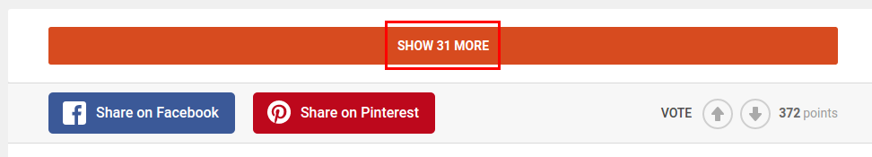
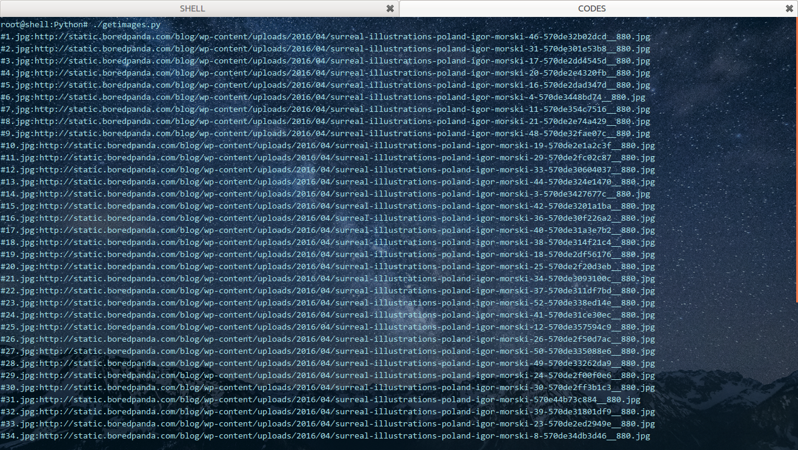

今天看到这个网站,
上面的图片很震撼遂打算弄下来,结果发现图片还挺多,有51张之多.找了几个浏览器插件,下载也很不理想.
于是打算写个Python爬虫来下载...额...其实...前后写这个爬虫,花费的时间远远大于手动一张张保存...然而,我现在事情并不多,
于是就本着连代码的精神,写了一个.
首先就是分析网页结构了,打开Chrome,然后Ctrl+Shfit+i,打开调试工具,如下图所示:

首先用鼠标点击1,然后光标移动到图像2处,这时候Chrome会自动高亮图像所对应的源码3,由此我们可以观察到图片所在的父容器为4:<p></p>.
但是这里我们不关心它的父容器是谁了.我们可以直接关注3.其源码如下:
<img class="image-size-full" src="http://static.boredpanda.com/blog/wp-content/uploads/2016/04/surreal-illustrations-poland-igor-morski-46-570de32b02dcd__880.jpg" alt="Surreal Illustrations" title="Surreal Illustrations" width="700" height="700">
我们需要的是src属性的值,也就是图片的直接地址.注意到该图片标签img所应用的类class为image-size-full,
这里很幸运的是,只有我们想要的图片才是这个属性值,其他不想要的图片则没有这个属性.
所以使用BeautifulSoup只需要简单的一句代码即可搞定:
soup.find_all(name="img",attrs={"class":"image-size-full"})
返回的是一个结果集(实质上为一个列表),每一条记录中包含这一个img标签(tag),里面有我们想要的src.
因此,只需遍历这个结果集,然后取其中的src即可tag_name['src'].另外我们也可以将一条记录先将其字符串,
然后再生成一个BeautifulSoup对象,再用BeautifulSoup中的方法来处理,这都是可以的.
但是....没完呢....
因为当我们往下翻的时候,发现这货居然出现了这个:

啥..."SHOW 31 MORE"...是的,没看错.还要点一下才能看..此时用Python来爬的话,只能爬下来20张图片!
还有更恶心的,当你点击上面的按钮时,还会有一个"SHOW 11 MORE"...因此我们可以得知该网页是每20张图片显示在一页.
那就把地址找出来吧,同样应用文章开始的方法,可以轻易的找到地址为:
http://www.boredpanda.com/surreal-illustrations-poland-igor-morski/?page_numb=2
一共三页,1,2,3循环一下就可以了.这样就可以得到所有的请求主页面了.现在基本上网页算是分析完了.
动手写代码撒~..~
这里我们使用Python3中的两个库:bs4(主要是用BeautifulSoup)以及requests.
一般的初始化一个请求,并将返回的请求交给bs的方法如下:
res=requests.get(url)
soup=bs4.BeautifulSoup(res.text)
其中url就是要访问的网页,然后返回的请求为res,其text属性就是返回的文本(网页源码),
交给BeautifulSoup生成一个soup对象.然后就可以使用soup来处理源码啦~,就是这么简单!
然后还涉及一个问题就是保存图片啦,保存图片使用requests的get方法,启用流模式,如下:
res=requests.get(img_url,stream=True)
with open(path/to/file,'wb') as f:
f.write(res.content)
这样子,代码的障碍也解决了,最终代码如下:
#! /usr/bin/python3
#! -*- coding:utf-8 -*-
import requests
import bs4
url_main="http://www.boredpanda.com/surreal-illustrations-poland-igor-morski/?page_numb="
url_id=['1','2','3']
img_id=1
for i in range(len(url_id)):
url=url_main+url_id[i]
res=requests.get(url)
soup=bs4.BeautifulSoup(res.text)
imgs=soup.find_all(name="img",attrs={"class":"image-size-full"})
for j in range(len(imgs)):
img_soup=bs4.BeautifulSoup(str(imgs[j]))
#或者img_soup=imgs[j]
img_url=str(img_soup.img['src'])
#或者img_url=str(img_soup['src'])
img_response=requests.get(img_url,stream=True)
img_suffix=img_url.split('.')[-1]
img_name="#"+str(img_id)+"."+img_suffix
print(img_name+":"+img_url)
with open(img_name,'wb') as img_file:
img_file.write(img_response.content)
img_id+=1
贴一张运行截图:
